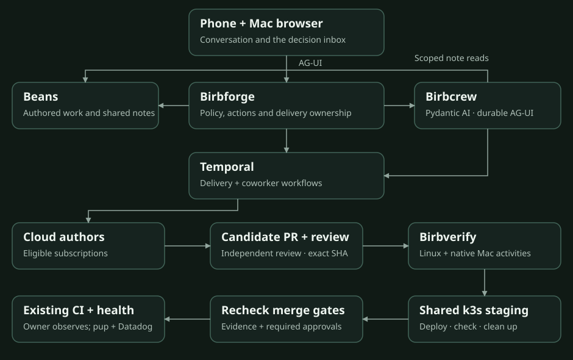

Approved goals. Verified changes.
The Birbforge software factory design and implementation field guide.
A private software factory that turns your approved goals into independently reviewed changes, verifies them in k3s, and stays responsible after merge.

Choose your depth.
01Understand the system
Behavior, ownership and the path from a goal to a healthy deployment.
Inspect the guarantees
Revision-bound evidence, durable recovery and authority boundaries.
Build the first proof
One coworker, two AG-UI clients, a worker restart and no repeated effect.
Own the workflow.
Reuse the machinery.
Beans for authored work. Temporal for durable execution. Pydantic AI for the first coworker proof. AG-UI and CopilotKit OSS for interaction. Existing repository tests for verification.
Agreed does not mean proven.
The architecture is agreed. Subscription integration, recovery, deployed verification and production follow-through still need their acceptance evidence. Each repository brief names those gates.
See the implementation order →What stays with the human?
Approve goals. Review authentication, permissions, destructive migrations, secrets and production infrastructure changes. Resolve decisions that the agents cannot safely settle within approved scope.
The phone supports the full daily workflow. Slack and push notifications link back to the same decision inbox.